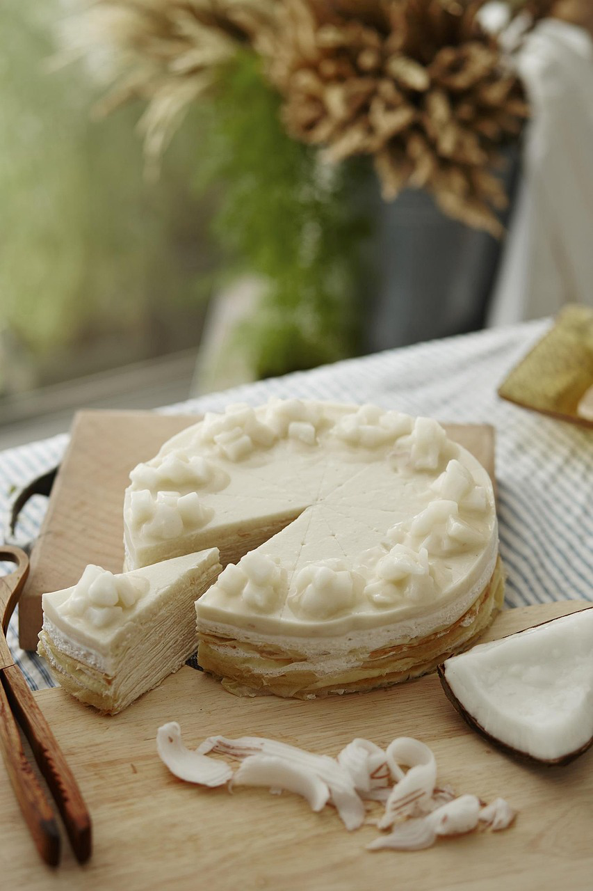
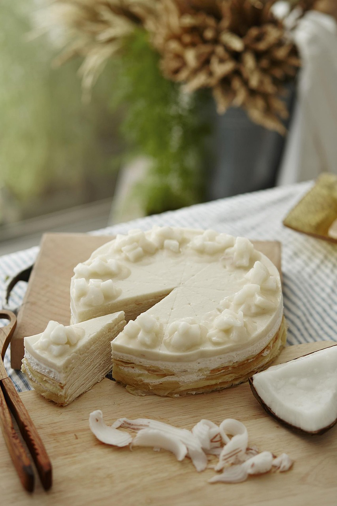

Atelier Martin
Ebéniste, Lyon
L’Atelier Martin est un espace dédié à l’art de l’ébénisterie traditionnelle, où chaque pièce bénéficie d’un soin minutieux. Situé à Lyon, il allie le respect des matériaux et des techniques anciennes à la créativité contemporaine, offrant des créations sur mesure et des restaurations de meubles anciens.
Formé chez Les Compagnons du Devoir, Samuel Martin possède une expertise en ébénisterie alliant innovation et respect des traditions. Son atelier est le reflet de son amour du bois et de son engagement à restaurer et créer des pièces uniques, alliant technique et esthétique.

Galerie

 



Services
-
Création sur mesure
Fabrication de meubles, cuisines et bibliothèques uniques.
-
Restauration & Réparation
Restauration & traitement du bois pour protéger vos meubles.
-
Livraison & Installation
Transport & installation des meubles à votre domicile.
-
Conseil & Expertise
Étude sur mesure et devis gratuit pour vos projets.
Contact
Atelier Martin
23 Rue des Bourguignons
Lyon 69002
01 23 45 67 89
Lundi - Vendredi de 10h à 17h
contact@atelierMartin.com